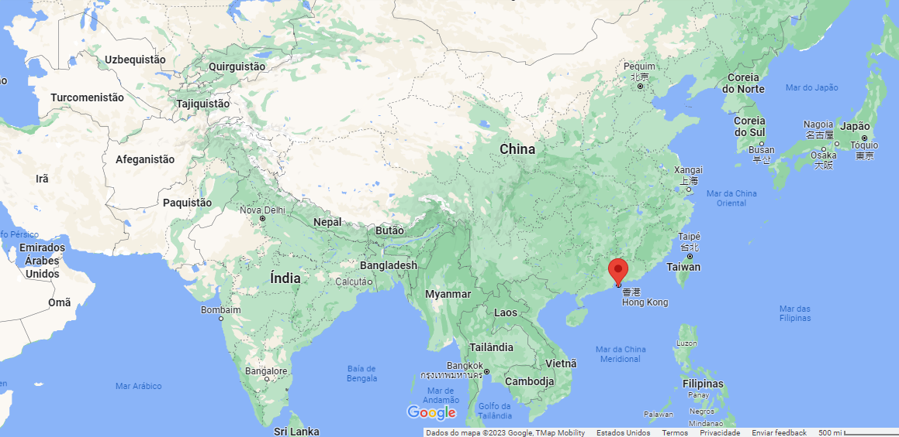

China X Hong-Kong
China x Hong Kong

Formação

Entre 1839 e 1942, ocorreu o conflito entre a China e o Reino Unido na 1° Guerra do ópio, onde o Reino Unido venceu e com isso pode ficar com a ilha de Hong Kong. 20 anos depois, na 2° Guerra do ópio, os chineses foram derrotados novamente, dessa vez perdendo a península de Kowloon.
Quatro décadas depois, os ingleses aumentaram ainda mais sua influência
na região da China, se espalhando pelos chamados “novos
territórios", num acordo que teria valor por 99 anos. Quando a data
de devolução dos territórios se aproximou, na década de 80, a China
ameaçou começar uma invasão para recuperar todo o seu território,
incluindo a área de Hong Kong. E então, no dia 1 de Julho de 1997, o
Reino Unido transferiu a soberania dos territórios de volta para a
China.
Acontece que, durante todo o tempo que Hong Kong passou sob controle do Reino Unido, ela cresceu e desenvolveu muito no sistema capitalista, se tornando um dos maiores financeiros do mundo, então quando a China, que é Socialista, voltou ao controle da ilha, ela aceitou o acordo “1 país, 2 sistemas’, permitindo que Hong Kong continuasse seu estilo de vida capitalista por mais 50 anos (até 2047).
Atualmente
O conflito entre a China e Hong Kong acontece pois, mesmo que o acordo ainda não tenha acabado, e analisando bem, vemos que a China está tentando antecipar o fim dele e o controle total sobre Hong Kong, pois para ela, manter o controle sobre a ilha é estratégico, tanto comercialmente quanto geopoliticamente.

Por isso, o povo de Hong Kong, principalmente os jovens, com medo de perder seus direitos, vai às ruas para manifestar a favor da democracia, mas são repreendidos com força pela polícia comandada pelo Governo Chinês.
Atividades econômicas
O comércio exterior representa uma grande porção de toda a economia da China, seus principais parceiros comerciais são os Estados Unidos, Hong Kong, Coreia do Sul, Japão, Vietnã, Austrália e Alemanha.
Reportagens
https://brasil.elpais.com/brasil/2019/08/17/internacional/1566034762_371967.html
www-bbc-com.cdn.ampproject.org/v/s/www.bbc.com/portuguese/internacional-50457821.amp
https://www.economist.com/leaders/2020/05/28/china-has-launched-rule-by-fear-in-hong-kong
Fontes:
https://www.sucessosa.com.br/noticia/tensao-entre-china-e-hong-kong-ja-perdura-anos-entenda